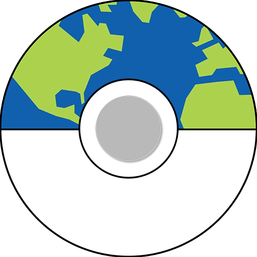

<ion-view title="Splash" hide-nav-bar="true" style="background: linear-gradient(#18125A, #00DCDC);">
  <ion-content padding="true" class="manual-ios-statusbar-padding">
    <div>
      <div class="row">
        <div class="col col-center logo-icon">
          
        </div>
      </div>
    </div>
    <ion-spinner class="loading-spinner"></ion-spinner>
  </ion-content>
</ion-view>
